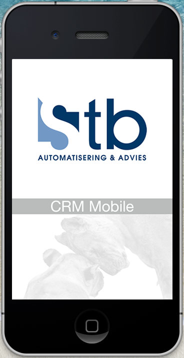
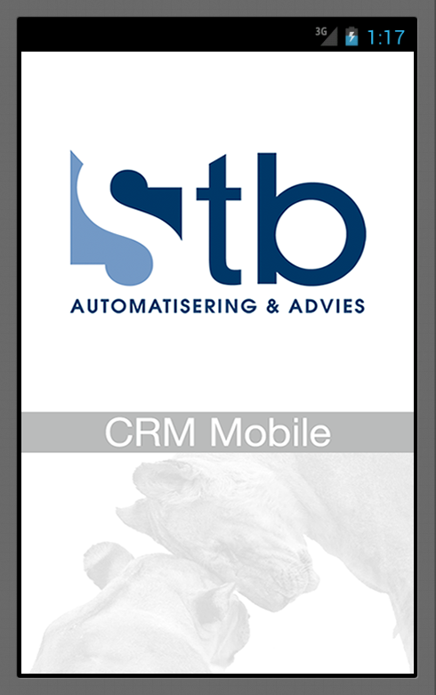

Stb CRM Mobile
Built with Titanium SDK
 Who are we?
Autmatisering & Advies BV is a  company supporting customer relations and business processes for a little over 20 years.
company supporting customer relations and business processes for a little over 20 years.
The Timisoara office has been established in 2008 and has grown ever since.
The team is focused on R&D of all the projects in the company.
We're currently developing using...
Hybrid development, deployment and integration platform to develop, deploy and manage SaaS and On Premise applications.
Language: JavaScript
Products: Stb CRM, including all the modules
Our COBRAIN© methodology:
- Core modules, with functionality that is identical for each client.
- Sector-specific functionality added to the foundation represented by the first layer.
- These modules add tailored functionality to the modules on the first and second layer.
One of the best PHP frameworks out there that suits our needs very well
Languages: PHP, HTML, CSS, JavaScript and a bunch of JavaScript libraries.
Products: Worknets.com, Stb CRM Web Registrations module
The greatest publishing platform, well suited for small to medium websites.
Languages: all of the above plus some nice designs
Products: websites
What is Titanium SDK?
- It's NOT a HTML5/CSS3/JS framework, although you can embed any kind of HTML/CSS in your apps.
- It enables web developers to use open web technologies (read JavaScript) to develop native apps.
- It supports iOS, Android, Blackberry (beta), and Mobile web.
- It uses JavaScript APIs for the native UI.
- All the scripting is done with JavaScript.
- It uses the following JS interpreters: for Android < 2.2 Rhino, for Android 2.2 and up V8, and for iOS JSC
- It's Open Source so you can go in an hack around.
Platform features
-
Native UX
Native UI, animations, gestures, etc.
-
Multimedia
Camera, video camera, audio/video playback/streaming
-
Location-based services
Geo-location, compass, native maps
- Integrated analytics
-
Social sharing
Facebook, Twitter, YQL, native email and address book access
-
Data
SQLite database storage, lightweight key-value pair storage, web services
-
Cloud services (ex Cocoafish)
Push notifications
-
Development tools
Create, test, publish your apps using the same tools across platforms.
iOS development is still limited to MacOS and Xcode.
-
Extensible through modules
Modules can be native or JavaScript.
You can get them on appcelerator marketplace too.
"Hello World" in Titanium
Ti.UI.backgroundColor = "#ffffff";
var win = Ti.UI.createWindow();
var label = Ti.UI.createLabel({
text: "Hello World!"
});
win.add(label);
label.addEventListener('click', function(e) {
alert(this.text);
});
win.open();
CommonJS modules
function MyWidget(opts) {
var self = Ti.UI.createView(opts);
// more code here
return self;
}
module.exports = MyWidget;
var MyWidget = require('MyWidget');
var widgetInstance = new MyWidget(opts);
exports.isAndroid = function() {
return Ti.Platform.osname === 'android';
}
var Utils = require('Utils');
alert(Utils.isAndroid());
Why did we choose Titanium SDK?
- It's JavaScript, we all know it :-)
- Clients enjoy native UI more
- The apps are very smooth even on older devices
- You can build a cross platform app with minimum amount of platform specific code
- The API is not all that different from our current frameworks
Demo time
Questions?
Contact
lucian@stb.nldiana@stb.nl